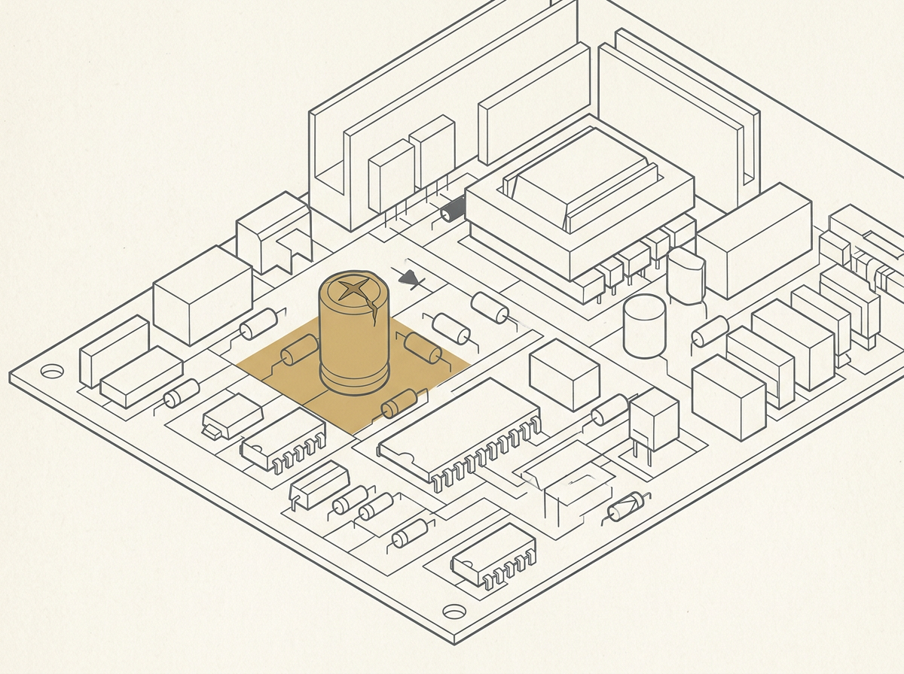
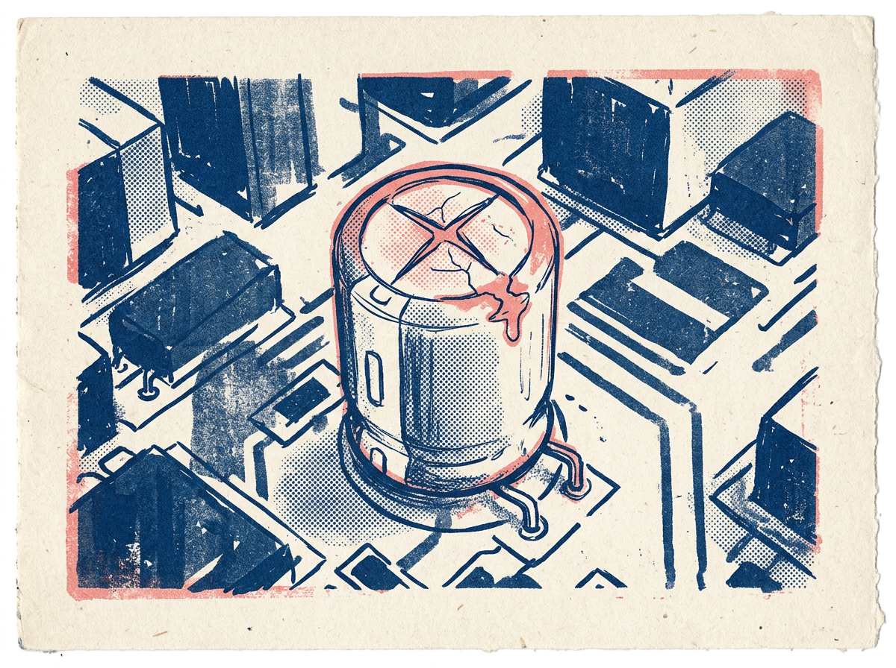
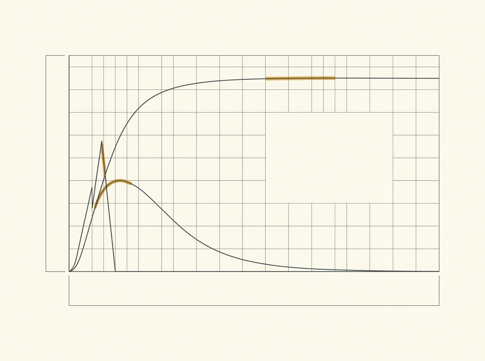
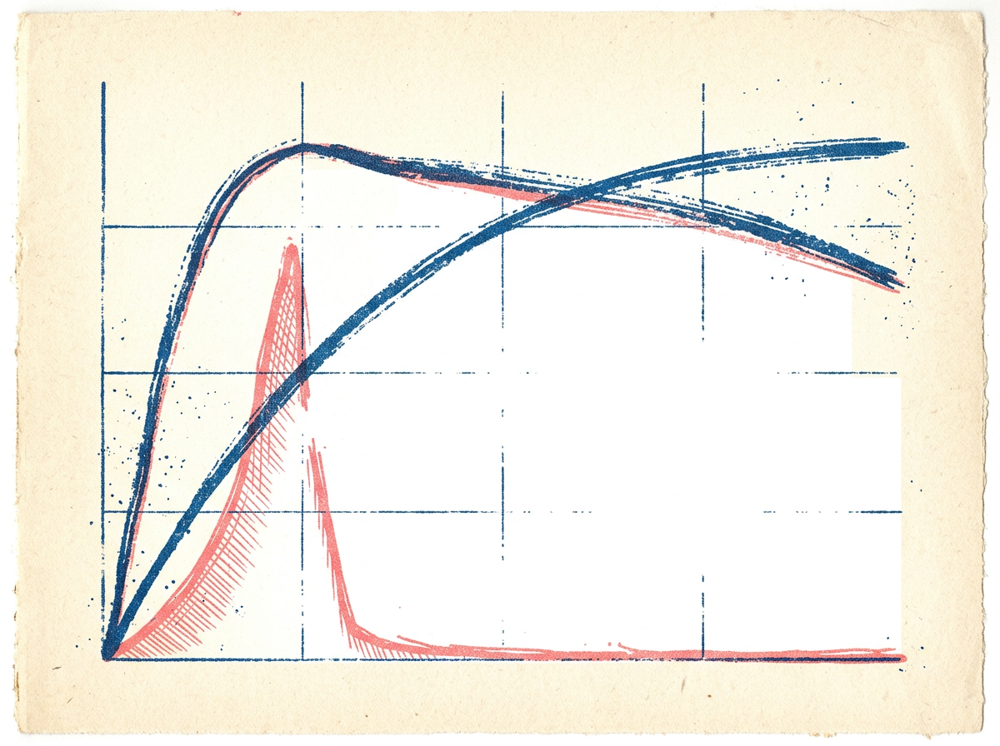
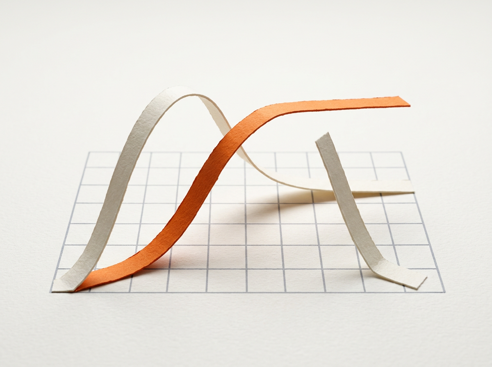
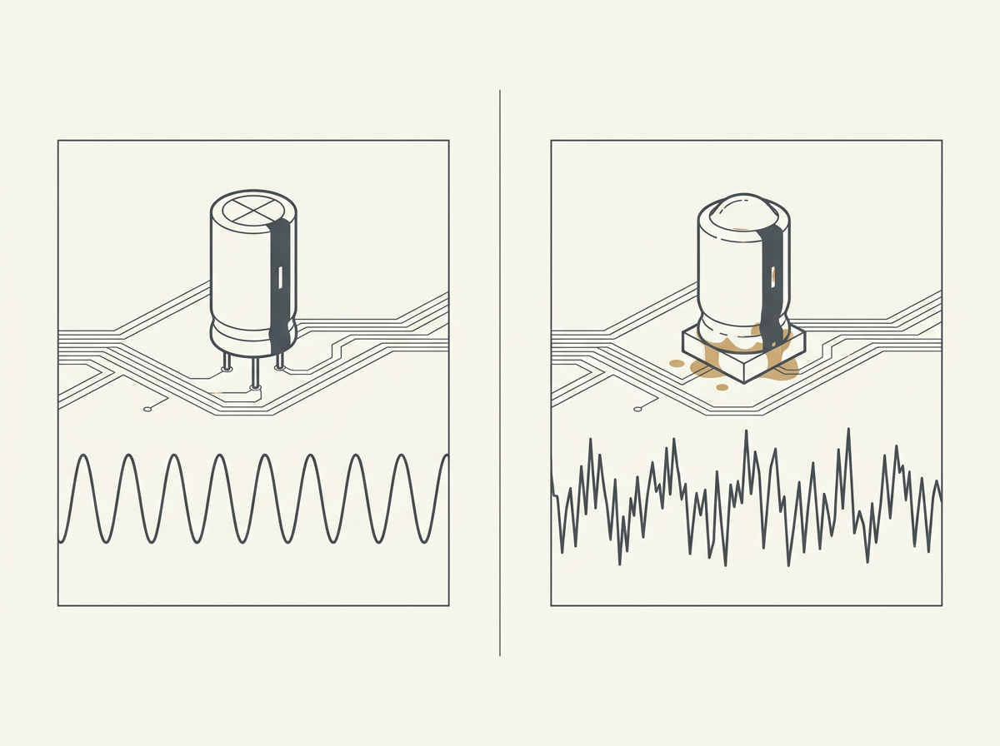
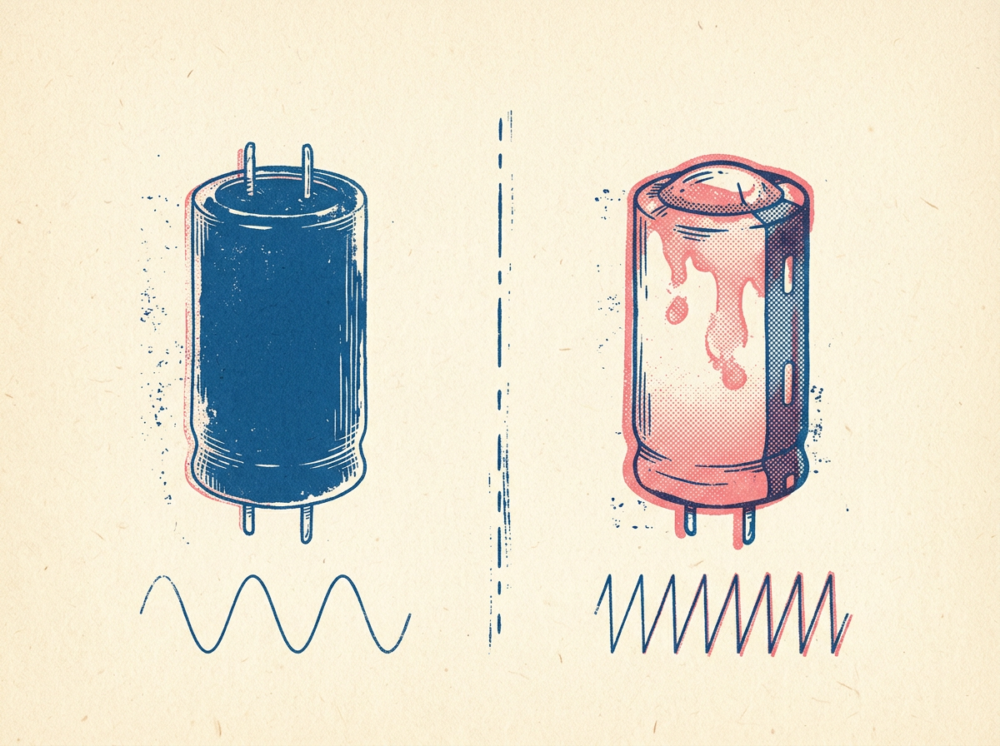
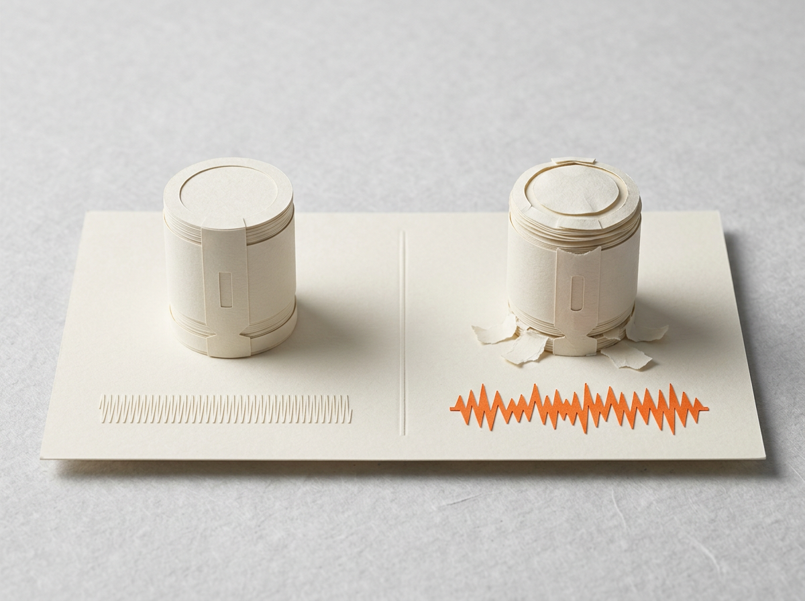

这张表比的是什么。三套候选风格各出 3 张
无文字底图，与本章现有确定性
SVG 原版并排。按规格 §3.3，判读句、数值、单位、电路符号与中文标注一律由 SVG overlay 叠加，
不采用 AI 图内文字；因此下表分数只评价底图的风格、构图与印刷风险，overlay 之后须重评。
三套候选（上游 handraw-style v1.9.8，提交 572dff8，均判定不需垫图）：
- 原版 — 本章现有 14 个锚点中的 3 张代表图，FA-029 皮肤 + 确定性 SVG。
- 候选 A · FA-029 Geometric Diagrammatic Narrative（激活
name+style）
· 色彩 C-30 象牙白 / C-31 佩恩灰 / C-29 赭石。
- 候选 B · FH-043 Vintage Risograph and Silkscreen Print（
name+style+traits）
· 色彩 C-03 普鲁士蓝 / C-21 珊瑚粉 / C-30。
- 候选 C · FF-015 Paper Sculpture Illustration（
name+style+traits）
· 色彩 C-30 / C-35 石板灰 / C-26 柿子橙。
现象主图 V1 · IG-027
17.5 鼓包电解电容与板上热区 |
定量图 V3 · IG-009
17.7 上电电流三条签名形状 |
失效对比图 V4 · IG-004
17.2 正常与鼓包电容对照 |
|
列序：原版（确定性 SVG） · 候选 A（FA-029） · 候选 B（FH-043） · 候选 C（FF-015） |

原版 ch17-hot-spot-reading.svg：两步流程 + 判读条 + 教学示例链，信息密度最高，但媒介是线稿示意。 |

A：等距矩形板面 + 十字泄压槽，几何语言与原版同族；无热区/温度线索，需 overlay 补。 |

B：撕口与渗液最「档案」，但四周器件被画成坡顶房屋块，读起来像小镇俯瞰而非电路板。 |
C：撕开的十字口露出橙色内层，现象最直观；代价是斜视角、左侧大片空区、只有一只器件。 |

原版 ch17-power-on-current-signature.svg：曲线与判读卡同图，坐标刻度真实可用。 |

A：三条曲线形状对，但网格右中成片缺失、左侧多一条游离竖框、赭石高亮条不贴曲线 —— overlay 刻度无处可依，须重出。 |

B：干笔线有力量，但网格只剩几条断续线、中部一块纸白补丁，刻度只能靠 overlay 重画满幅。 |

C：剪纸带离桌面的高度与纵轴数值是两套语义，斜视角网格无法承载直角刻度 —— 定量图不建议采用此语言。 |

原版 ch17-virtual-short-test.svg：判据 + 两分支 + 教学示例，逻辑结构最强。 |

A：双栏分得很干净，右侧渗液用赭石；波形是通用正弦/噪声，未体现 100Hz 频率户口。 |

B：三张里判读最清楚；但左只电容没有十字泄压槽，「同一只器件」的前提被削弱，且脱离板面语境。 |

C：实物感最好；但左侧「正常」波形是象牙压象牙的压纹，灰度印刷几乎看不见，对照全靠橙色。 |
主风格：C · FF-015 纸雕微距，作为全书主语言。
色彩全书换装为 C-34 奶油白（纸）+ C-32 炭黑（墨）+ C-35 石板灰（纸层阴影）+
C-26 柿子橙（重点）。辅助风格仍空（原推荐「C 限定 V1/V6」的前提是主风格为 A，主风格改 C 后失效）。
一处角色纠正：拍板时把 C-35 石板灰标成了「纸」（该标签是提问侧的错误）。
按上游色卡中位像素实测，石板灰 L*=35.6 是中暗灰，做纸底时纸墨仅 1.91:1、
纸重点仅 1.24:1，16K 单色打印直接塌成一片；已改判为纸层阴影。
夹具与实测：scripts/make_grayscale_fixture.py、make visual-gray、
reviews/palette-2026-11-05/。
| 色族 | 纸↔墨 | 纸↔阴影 | 纸↔重点 | 墨↔重点 | 阴影↔重点 | 判定 |
|---|
| 已拍板 C-34/C-32/C-35/C-26 | 10.42:1 | 5.45:1 |
4.40:1 | 2.37:1 | 1.24:1 | PASS |
| 石板灰当纸底（原字面写法） | 1.91:1 | 1.00:1 |
1.24:1 | 2.37:1 | 1.24:1 | FAIL |
| 现行全书 C-30/C-31/C-29 | 8.36:1 | 8.36:1 | 6.90:1 |
1.21:1 | 1.21:1 | PASS |
本表的失分项没有因为拍板而消失，它们变成批量生产的硬前置。
ch17 的 24 个点位里 V3 定量图 6 + V5 流程／决策图 7 = 13 个（54%，2026-11-05 按 ch17.yml 套用后重算；本行原记 11 个／46%，少算了既有锚点里的两张 V5），恰好是 C 本轮失分最狠的两类：
事实精度 3/5（剪纸层高与纵轴刻度两套语义打架）、印刷可读性 2/5、构图层级 3/5（斜视角标注引线跨过主体）。
四条规则已实测得出，但尚未写进闸：层高不得编码数值、量值只由 SVG overlay 坐标轴编码、
引线不得跨主体、重点色不得压在石板灰层上（1.24:1）且多曲线分类不得只靠颜色（墨↔重点仅 2.37:1）。
剩余前置：用 FF-015 重出 3 张定量底图（i²c 上升时间预算、热链审计、先验代价矩阵）逐张附灰度对照，
静态 5 项复评每项 ≥4。
返工范围：采纳 C + 换色意味着既有 218 条待复用资产（157 个动画登记条目 + 61 张静态图）
的媒介与配色整体重做，属 Task 11 额外范围。完整决策与执行序见 pilot-decision.md。